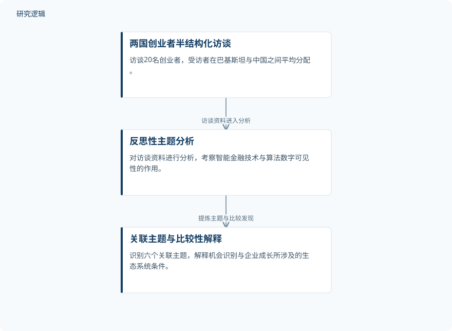

摘要解读
人工智能金融科技创业生态系统：巴基斯坦与中国的机会识别及企业成长比较
The AI-FinTech Entrepreneurial Ecosystem: Exploring How Intelligent Financial Technologies and Algorithmic Digital Visibility Transform Opportunity Recognition and Venture Growth. A Comparative Study of Pakistan and China
解读更新 2026-10-21 22:20 · 依据公开摘要整理，未核验全文细节
AI金融技术如何真正帮助创业者发现机会、获得客户并推动企业成长？这项巴基斯坦与中国的定性比较研究，将金融智能与平台上的算法可见性放在一起考察，关注技术价值转化所依赖的能力与环境。
文章目录
创业机会不仅取决于金融工具，也取决于能否被看见
创业者发现机会、获取融资、触达客户和扩大业务的过程，正与数字平台上的人工智能和金融科技交织。研究关注的不只是智能金融技术本身，还包括算法数字可见性：创业者在平台上被看见的条件，如何参与塑造机会识别与企业成长。
作者选择巴基斯坦与中国开展比较，尝试从创业生态系统层面，将创业警觉性、动态能力、数字金融与算法可见性联系起来，而不是孤立讨论某一种技术工具。
从创业者访谈中提炼生态系统主题
研究采用定性比较方法，对20名创业者开展半结构化访谈，受访者在两国之间平均分配；随后使用反思性主题分析处理访谈资料。摘要明确呈现的方法链条是从访谈材料进入主题分析，再形成对两国创业生态的比较性解释。
依据摘要整理的访谈与分析过程


仅概括摘要明确报告的资料获取与分析关系，是研究过程示意，不是论文原图，也不表示因果验证。
下载 SVG图示关系说明
实线表示相邻阶段的信息流，虚线表示跨阶段联系或反馈。
两国创业者半结构化访谈 → 反思性主题分析：访谈资料进入分析；反思性主题分析 → 关联主题与比较性解释：提炼主题与比较发现
数据转化为行动，平台提供稳定入口
分析识别出六个相互关联的主题：作为机会感知基础设施的AI金融科技、作为市场进入机制的算法可见性、作为资源编排能力的智能金融、平台不透明性与依赖、两国生态系统的不对称性，以及作为边界条件的人类判断、信任与治理。
比较发现指出，当创业者能够将数据转化为行动，同时数字平台能为可见性、合法性认可和客户触达提供稳定路径时，AI赋能的金融智能最能创造价值。摘要因此将技术能力、创业者行动和平台条件联系起来，但未给出价值提升幅度，也未展开两国差异的具体方向。
访谈覆盖与跨国差异仍需更多信息
仅凭摘要，无法判断受访者的招募方式、行业分布、企业阶段及具体平台使用背景，也无法评估两国样本的可比性。摘要未交代各主题的访谈证据、成长的衡量方式或进一步验证范围，因此不能据此作出全国性排序、因果判断或普遍效果承诺；这些是当前资料的判断边界，不代表论文没有开展相关工作。
阅读启发：追问技术价值如何穿过平台条件
阅读启发：进一步阅读时，可重点追问创业者如何把金融数据转化为行动，以及平台不透明性和依赖如何影响这一过程。还应关注作者怎样用访谈材料解释两国生态差异，并界定人类判断、信任与治理的作用，避免把生态系统解释直接读成技术必然促进增长的结论。
以上为本站阅读启发与建议，不是论文已验证的结论。